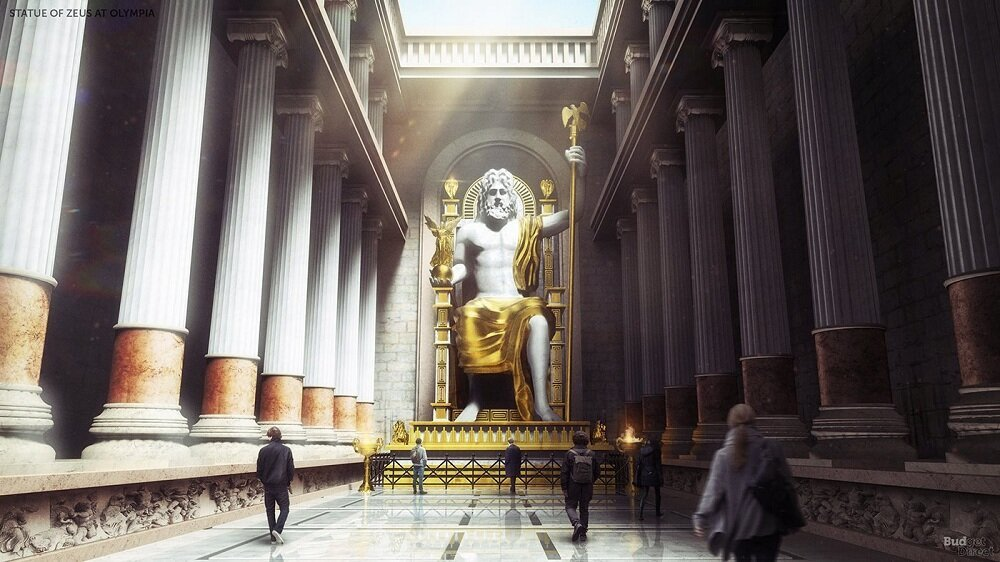

1.Kim Tự Tháp Giza
(Ai Cập)
Kim tự tháp Giza
Đây là kỳ quan thế giới cổ đại duy nhất còn tồn tại đến ngày nay trong các kỳ quan của thế giới. Kim Tự Tháp được xây dựng hoàn toàn bằng sức người với lực lượng lao động ước tính lên đến 800.000 người:
- Đây là công trình nhân tạo cao nhất của hành tinh suốt hơn 4 thiên nhiên kỷ
- Tổng khối lượng của kim tự tháp được ước tính là 5,9 triệu tấn
- Đại kim tự tháp Giza ban đầu được bao phủ bởi đá vôi có độ bóng cao. Lớp đá này hoạt động như một tấm gương khổng lồ phản xạ ánh sáng mạnh mẽ để có thể nhìn thấy từ Mặt Trăng.
BOOK TOUR
Remember to book tour !
- September Sold out
- October Sold out
- September 3
Entrance ticket
11 November 2022
Con cò bé bé nó đậu cành tre, đi không hỏi mẹ biết đi đường nào hihihi
BUY TICKETEntrance ticket
11 November 2022
Con cò bé bé nó đậu cành tre, đi không hỏi mẹ biết đi đường nào hihihihihi
BUY TICKETfull tour
11 November 2022
Con cò bé bé nó đậu cành tre, đi không hỏi mẹ biết đi đường nào hihihihi
BUY TICKET2.Tượng thần Mặt Trời Rhodes
(Hy Lạp)
Tượng thần Mặt Trời Rhodes
Tượng thần Mặt Trời Rhodes được xây dựng vào thế kỷ thứ II trước Công nguyên với chiều cao là 33m. Tuy nhiên, bức tượng này đã bị phá hủy bởi một trận động đất diễn ra vào năm 226 trước Công nguyên.
- Đây là công trình có thời gian tồn tại ngắn nhất trong 7 kỳ quan thế giới cổ đại.
- Sau khi trận động đất làm vỡ bức tượng, những phần đổ vỡ tiếp tục nằm im trên mặt đất trong gần 800 năm bởi một lời sấm đã khiến những người Rhode sợ hãi rằng họ đã xúc phạm đến thần Mặt Trời và không dám xây dựng lại.
3.Đền thờ nữ thần Artemis
(Thổ Nhĩ Kỳ)
Đền thờ nữ thần Artermis
Đền thờ nữ thần Artemis được xây dựng tại thành phố Ephesus, một trong những thành phố cổ của Hy Lạp. Thành phố Ephesus (nay thuộc Thổ Nhĩ Kỳ), nằm bên bờ biển Aegea. Ngôi đền này còn có tên gọi khác là đền thờ Diana và được xây dựng từ đá cẩm thạch, do kiến trúc sư Chersiphron và con là Metagenes xây dựng.
- Ngôi đền dài 115m, rộng 55m, gồm 120 cột đá, mỗi cột cao 20m và được cho là cất giữ rất nhiều tác phẩm nghệ thuật tinh tế, trong đó có bức tượng đồng của Amazon.
- Ngày nay, chỉ còn phần nền và một vài trụ cột của ngôi đền được lưu giữ.
4.Vườn treo Babylon
(là một thành quốc của Lưỡng Hà cổ đại. Các di tích của thành quốc này được phát hiện ngày nay nằm ở Hillah, Babil, Iraq)
Vườn treo Babylon
Hiện các nhà sử học vẫn chưa thể xác định được vị trí chính xác của khu vườn xinh đẹp này.
- Vườn treo Babylon là một công trình do vua Nebuchadrezzar II xây dựng năm 603 trước Công nguyên nhằm làm thỏa nỗi nhớ quê hương xứ Medes của người vợ.
- Trong vườn treo có một hệ thống đài phun nước gồm hai bánh xe lớn liên kết với nhau bằng dây xích có gắn thùng gỗ. Khi bánh xe quay, dây xích và thùng gỗ sẽ chuyển động để đưa nước ở một cái bể phía dưới lên trên cao và tưới nước cho cây.
5.Ngọn hải đăng Alexandiria
(Ai Cập)
Ngọn hải đăng Alexanderia
Ngọn hải đăng Alexandria được một nhà cai trị người Hy Lạp tại Ai Cập tên là Ptolemy xây dựng vào thế kỷ thứ III trước Công nguyên. Ngọn hải đăng được sử dụng như một đèn hiệu để các tàu trong vùng biển nguy hiểm ra khỏi thành phố cảng Alexandria của Ai Cập:
- Ngọn hải đăng được vận hành bằng cách sử dụng lửa vào ban đêm và gương đồng được đánh bóng để phản chiếu mặt trời vào ban ngày. Người ta nói rằng ánh sáng từ ngọn hải đăng có thể được nhìn thấy từ khoảng cách 50km ngoài biển khơi.F
- Sau khi trận động đất làm vỡ bức tượng, những phần đổ vỡ tiếp tục nằm im trên mặt đất trong gần 800 năm bởi một lời sấm đã khiến những người Rhode sợ hãi rằng họ đã xúc phạm đến thần Mặt Trời và không dám xây dựng lại.
6.Tượng thần Zeus ở Olymipa
(Hy Lạp)
Tượng thần Zeus ở Olympia
Tượng thần Zeus được xây dựng vào khoảng thế kỷ thứ IV trước Công nguyên có chiều cao 12m, rộng 7, nằm ở thành phố cổ Olympia.
- Bức tượng có các chi tiết trang trí được làm bằng vàng và ngà voi.
- Nhiều nhà sử học tin rằng tượng thần Zeus đã được chuyển đến Constantinople (nay là Istanbul) ở Thổ Nhĩ Kỳ nhưng sau đó cũng bị thiêu cháy trong lửa.
7.Lăng mộ Mausoleum
(Thổ Nhĩ Kỳ)
Lăng mộ Mausoleum
Lăng mộ Mausoleum được thiết kế và xây dựng bởi một kiến trúc sư nổi tiếng của Hy Lạp tại thành phố Halicarnassus.
- Công trình này dài 40m, cao 45m này với sự đóng góp của 1.200 lao động, làm việc miệt mài trong 17 năm.
- Phòng chôn cất ở trung tâm được trang trí bằng vàng, bên ngoài được tô điểm bằng những trụ gạch đá cầu kỳ và nhiều tác phẩm điêu khắc.